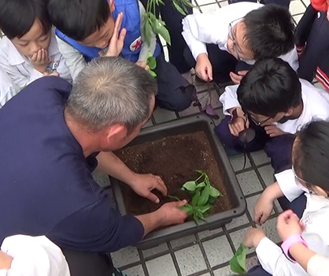

社子島小農的日常工作有整地、種植、澆水、施肥、收割、送貨、除蟲、除雜草等，讓我們請地瓜葉種植達人俊明會長來談談地瓜葉的種植經驗談吧！
剛剛摘下的新鮮地瓜葉
地瓜葉的種植方法很簡單，主要是使用扦插法，而不是直接種地瓜等葉子長出來。通常剛剪下的地瓜葉柄就可以直接種。葉梗要留長一點，否則葉梗太嫩，受到日照風吹就會容易枯萎，老一點的葉梗比較好種。先剪去地瓜葉梗下半部的葉子，只留上半部的葉子，以避免水分蒸發太多太快，最重要的是，種下的地瓜葉會一直往上長而不會有分支，要記得把嫩葉折起來或拔掉，留下一些枝芽，如此才會長出很多分支的枝葉。
接下來要先把土壤除完雜草後盡量用鬆，插進泥土裡面3至5公分，再把土覆蓋起來，不要用腳去踩，萬一葉梗被踩壞踩碎了，就會長不出來。最後，用手輕輕壓一下，稍微澆一些水，就大功告成了！地瓜葉的葉梗剛種下去還會立著，隔天就會睡著 (垂下來)，記得持續兩天澆一次水，如果大太陽的時候先不要澆，到傍晚時再澆，經過一週細心照料，就會產生變化，葉梗會再次立起來，直直的，代表已經開始在長根，就這麼簡單！
先摘掉下端多餘的枝葉- 
用扦插法種植
地瓜葉說好養又不好養，尤其夏天要澆水時，就得是早上和傍晚，早上是指7、8點前，傍晚則是4、5點以後，等太陽下山的時候再來澆 ，這樣地瓜葉才不會像洗三溫暖，容易生病。冬天時也要注意寒流來襲，若溫度低於10度、或溫差10度以上，地瓜葉就會凍傷，葉子會轉變成褐色，賣相不佳。如果碰到結霜，只有一個辦法，就是灑水，灑水的目的就是讓葉子表面保持濕潤，霜就會像是溜滑梯一樣滑下去，讓損害可以降低。

水管管線噴水澆灑
此外，地瓜葉也會有病蟲害的問題，如果田裡忽然出現很多蝴蝶時，就要開始煩惱了！因為牠可能準備要下蛋了！一隻蝴蝶一旦產卵就是整個密密麻麻的，蝴蝶會把蟲卵黏在葉子的背面，農民巡田時往往不容易發現，一旦發現時，可能就已經孵化了一兩百隻小蟲蟲。有的有機農場標榜無毒，就是只能用夾子去夾蟲，或用手去抓除。如果蟲蟲沒有啃食太過份的話 ，通常我們就和平共處，當作牠們是我們美麗的工作夥伴；如果真的影響到地瓜葉的收成，我們才會再採收葉子以後，噴一些農會調製的揮發性農藥趕走牠們，在安全無藥殘留時再採收。因為政府許可的農藥都是3到5天的期限就會揮發，揮發以後不可能馬上採收，要等到一週或第10天才來採收，這樣就不會有農藥殘留的問題。
施肥也是農民重要的日常工作，政府目前倡導用有機肥料，舉凡家裡的糞水、廚餘堆肥都是，以前施了水肥都會臭臭的，不過，現代的肥料工廠技術已經提升，會製作成顆粒狀的有機肥料，沒有臭味又香香的，就像是貓狗的飼料，連野貓野狗都會想跑進田裡吃，為了防止野狗闖入，踩壞田地，所以我們會在菜園周圍架起防護網。使用化學肥料，尤其是尿素，雖然能讓生長速度加快，但過度使用卻會損傷土地，連可以幫忙鬆土的蚯蚓也都會絕跡。
採收的時候第一個要件就是手套一定要戴，不是因為怕有蟲，是怕地瓜葉的乳汁不容易洗掉，工作服上常常可見被汁液沾黏的髒汙，很難洗掉，所以通常都拿舊衣服來穿。通常一大早去收割，早上4、5點天色很昏暗，可以戴上照明頭燈輔助照明。
地瓜葉的採收時間都是清晨天剛亮的時候最適合，因為早上有露水，地瓜葉水嫩嫩的時候採收最新鮮。我們是用人工採收，採收地瓜葉大約都在手掌的範圍大小收割，保留葉子和葉梗，會比只有葉子的，品質更好、價格更高。不過有時餐廳會為了節省廚師挑菜的時間和工夫，選擇採購只有嫩葉沒有葉梗的，需求各有不同。值得一提的是，我們採收完的地瓜葉先放到籃子，再用箱子裝起來，第一時間就會放到田邊四坪大小的冰庫裡面冰鎮，也就是保持她的鮮度，地瓜葉很怕悶熱的環境，很容易悶壞變黃、不能久放。
幫地瓜葉冰鎮一下保鮮
其實，中南部的農民很多都是使用收割機採收，優點是速度快、節省人力，前面收割後面直接裝箱，但採收的地瓜葉都短短的、平均的嫩度也不若人工採收的一致。曾經買了一台收割機來使用，卻發現由於社子島的田地規模較小，必須頻繁轉彎，並不適合使用收割機採收，後來便也閒置不用。
颱風天來的兩三天前是最忙碌的時候，因為要忙著搶收，就像是文旦柚遇到颱風來了要趕緊摘下果實，放到冰庫裏面去，但冰庫容量有限，也只能盡量採收，把損失降到最低。 颱風天也就是菜最貴的時候，有災害的話，原本這區菜可以割10斤，一定會有損失，只能收一半，菜價自然就會提升。市場的需求就是每天都要有菜可以供應，不能今天有明天沒有，需求是要每天都有，只有公休日不賣，星期一是果菜市場的公休日，可是週一晚上就要送菜。產地則是週日不用割菜，所以固定週日休息 但不是在家裡玩手機，也是要去田裡巡視一下，就像我們養的寵物一樣，看看牠今天吃飽沒，看看長得怎麼樣、澆澆水。
俊明會長的地瓜葉田
本地菜的價錢最優，屬於上等貨，市場上有分批發價、台菜的(也就是雲林西螺的、桃園八德的)，再來就是本地菜這三種批發價便宜的時候很便宜，一箱25斤只賣50元，可是颱風來了就會喊得很高，1500、2000員都會喊上去所以西螺菜、八德菜和本地菜的價格會相關比較穩定，維持在平均水準。所以拍賣場有它的好處也又壞處，像是中南部的農民有時候把菜拿到拍賣場可能拿不到錢。農民真的非常辛苦，尤其是中南部的，他們一定要跟農會配運到拍賣場裡面，如果價錢好就o，價錢不好可能什麼都沒有，連錢都不能拿。例如一箱50元，要工資、箱子材料費、貨車運費，到頭來卻可能血本無歸。所以農民有辛苦的一面，也有快樂的一面。
資料來源：王俊明會長蒞校分享影片、富安國小校訂課程社子島我的家：富安農趣多(曾雪英老師設計)

- 社子島的小農每一天都要先去菜園或果園看看，看看是否有蟲，看完後他們會施肥或澆水，這些流程，同學的外公曾經跟我們分享過，我一聽早上要這麼早起床，就知道困難度很高。同學的外公還說一句話，我們在跟太陽公公比賽，不能等到太陽公公全露臉之後，我們的事情還沒做完，這樣菜會長得不好，而且我們也會被曬昏。 我覺得當農夫真的很累，但不管再累再苦，他們都不會放棄，所以我們也應該向他們一樣，做任何事都不應該隨便放棄。(玄)
- Q1:以前和現在幾乎一樣，沒有變化！ Q2:以前如果田裡忽然出現很多蝴蝶時，就要開始煩惱了！等等，可是我們現在連要看到一兩隻蝴蝶都很困難！而且啊~一隻蝴蝶一旦產卵就是整個密密麻麻的，蝴蝶會把蟲卵黏在葉子的背面，農民巡田時往往不容易發現，一旦發現時，可能就已經孵化了一兩百隻小蟲蟲。像我們現在要知道蝴蝶怎麼生小孩子的真實情況都看不到耶～如果真的影響到地瓜葉的收成，我們才會在採收葉子以後，噴一些農會調製的揮發性農藥趕走牠們，在安全無藥殘留時再採收，我們現在的農夫大部分都是直接噴灑農藥，讓我們吃到的菜都好像是在吃農藥！雖然是這麼說沒錯拉，但是所以農民有辛苦的一面，也有快樂的一面。(璇)
- Q1.以前跟現在有什麼不同/相同？ A：以前人們的生活需求，都只能簡單處理便了，現代技術進來後，生活各方面都變得更加方便，不過某些傳統技術卻逐漸流失，在追求更進步的生活時，也不忘傳統技術的存在。 Q2.有什麼你覺得好的地方和不好的地方？ A：好的地方地方在於生活方面能更加方便，不好的地方在於傳統技術會不會因此而流失，兩方皆好卻也皆壞，唯有大家共同的守護，才能達到最好的結果。(均)